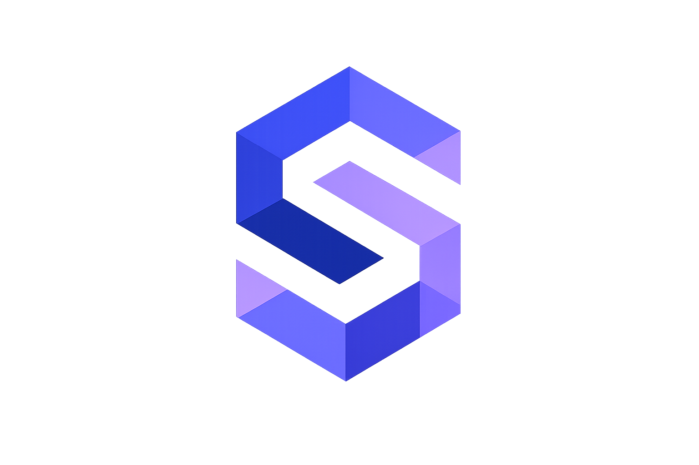
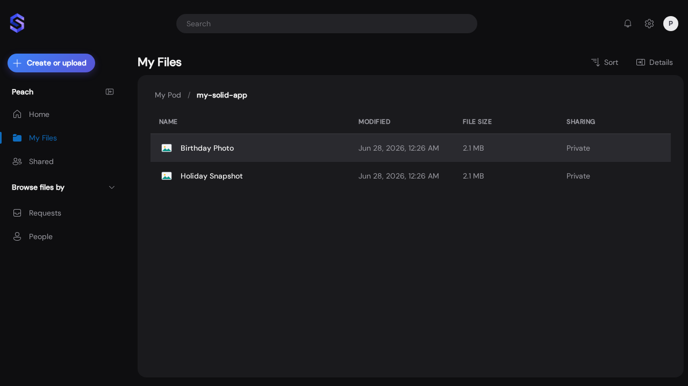
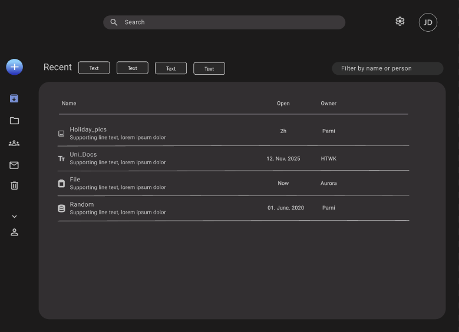
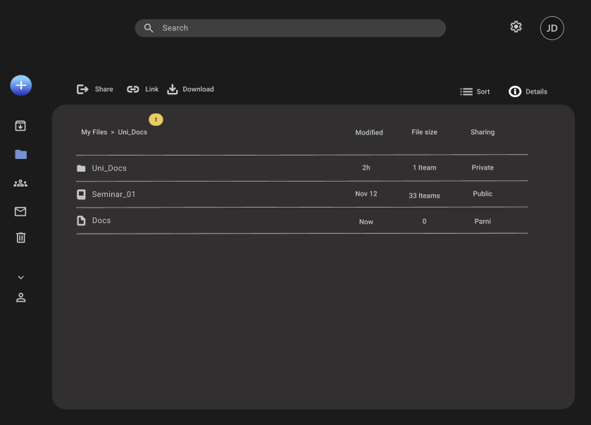
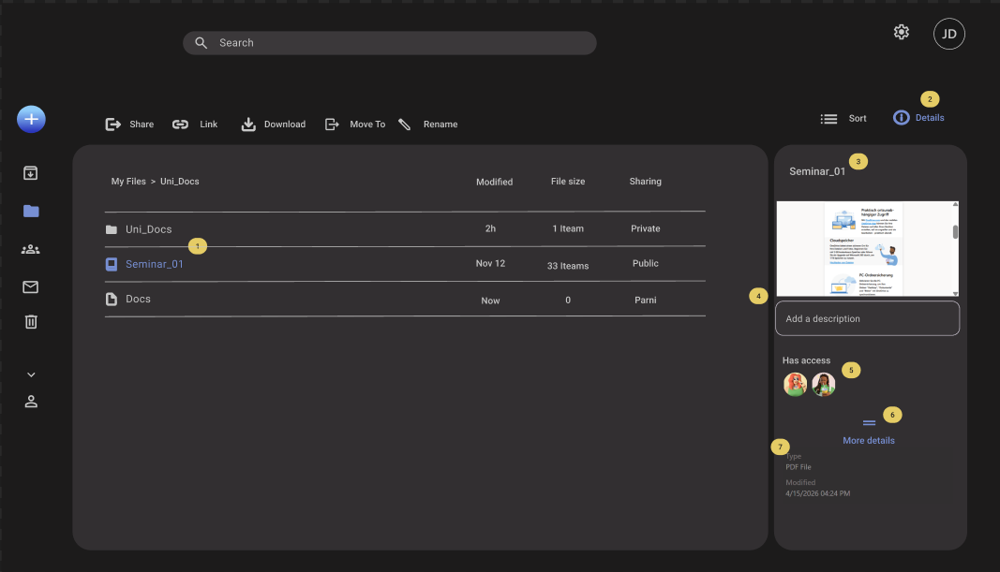
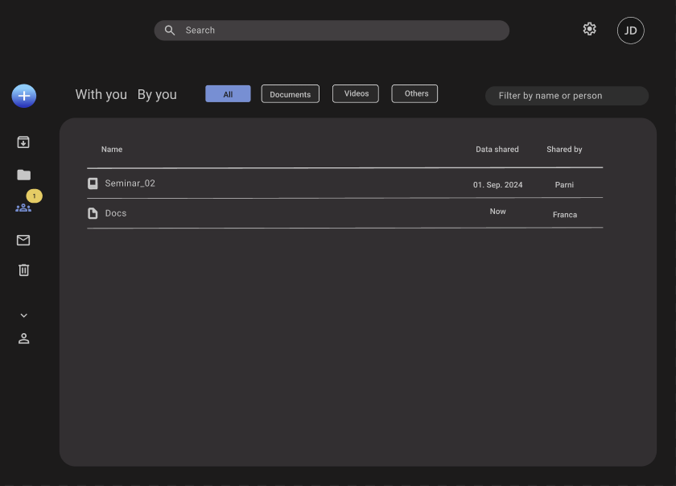
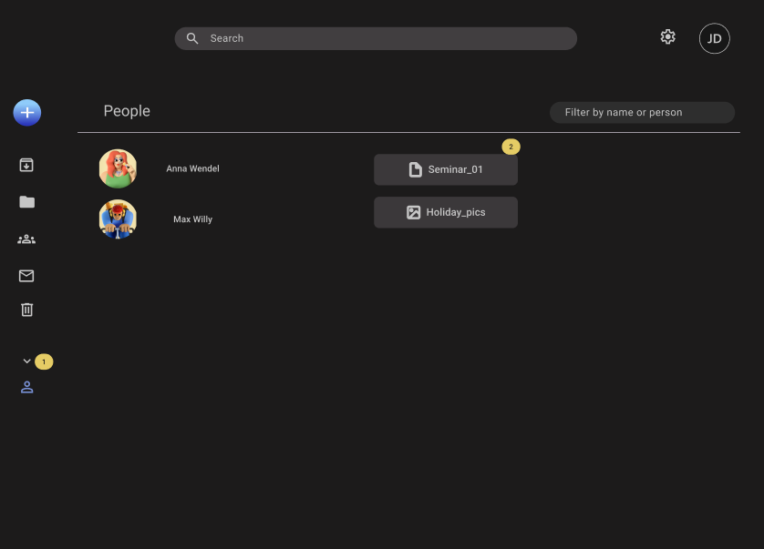
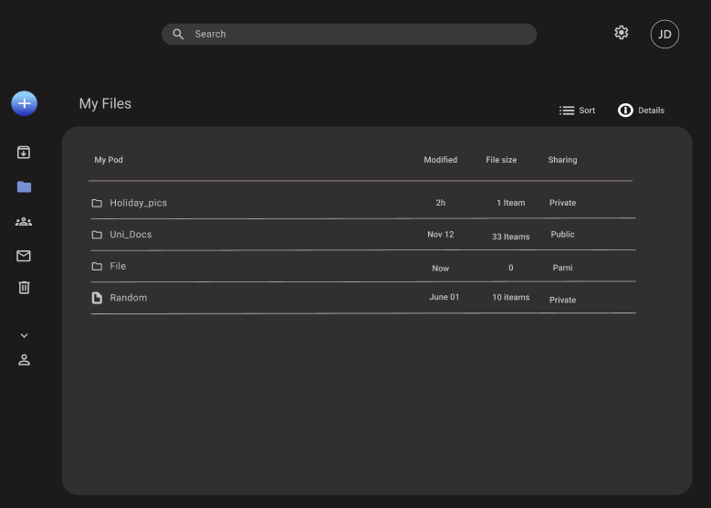

🔑
Sign in with any Solid provider
Log in through any OIDC-compliant Solid identity provider, or your own self-hosted server. Switch the UI between English and German at runtime.

Solid.Drive is a desktop-class file manager for your Solid Pod. Browse, upload and share your data from a familiar, OneDrive-inspired interface — without ever handing control of it to a platform. This is digital sovereignty, by design: your data lives in your Pod, and you decide who may read it.
The web's inventor, Sir Tim Berners-Lee, created Solid to give people back control of their data. His vision flips today's web around: instead of your files living on companies' servers under their terms, your data sits in a personal online datastore — a Pod — that you own and host wherever you like. Apps come to your data with your permission, rather than your data being locked inside apps. It is the web "as it was meant to be" — decentralised, interoperable, and owned by you.
Solid.Drive gives that Pod a friendly face. It turns Tim Berners-Lee's vision of personal data sovereignty into something you can actually use every day: a drive for your own data, where authentication, storage and access control stay entirely under your command.
Solid is a powerful but intricate stack — WebIDs, OIDC, RDF, ACLs, SPARQL. Solid.Drive keeps all of that complexity in the background and gives you a familiar, cloud-drive experience on top, so you get every benefit of the Solid Protocol without having to think about any of the plumbing.
Log in through any OIDC-compliant Solid identity provider, or your own self-hosted server. Switch the UI between English and German at runtime.
Choose at runtime between a classic two-pane explorer and a OneDrive-style shell with Home, My Files, Shared, Requests and People views.
Drag & drop or pick any file type. Each upload stores the binary plus an RDF metadata document, with a progress tray and per-file retry.
Walk the full Pod tree with breadcrumbs and deep links. Preview images, video, audio, PDFs and text without a byte leaving your browser.
Share owned files with contacts from your Solid profile. ACLs and per-contact shared catalogs stay in sync, and access is revoked just as cleanly.
MIME types map to schema.org classes, SHACL shapes validate uploads, and the catalog is maintained with SPARQL PATCH — clean and semantically rich.
Solid.Drive is a Progressive Web App: install it from Chrome or Edge and launch it in its own standalone window, separate from your tabs.
Light and dark themes plus four accent color schemes — Indigo, Emerald, Amber and Rose — so your drive looks the way you like.
The My Files view in every look. Switch the theme and accent color scheme to see all the different versions.







Solid.Drive runs entirely in your browser — nothing to install to try it. Install it as a desktop app or host your own when you're ready.
Head to the live demo — no sign-up, no download. It runs as a normal web app in any modern browser.
Log in through any Solid identity provider. Don't have a Pod yet? Create one with a provider such as solidcommunity.net in a couple of minutes, then come back.
Your Pod opens as a familiar drive. Upload files, organise them into folders, preview them in place, and share with your contacts — all under your control.
Run the published image and open it on your own machine:
docker run -p 40211:80 \
wseresearch/solid-hello-world-frontend-reactClone the repository, then start the dev server or a production build:
git clone https://github.com/WSE-research/Solid-Drive
cd Solid-Drive && npm install
npm run dev # http://localhost:5173Full setup, configuration, architecture and contribution details live in the project README on GitHub.